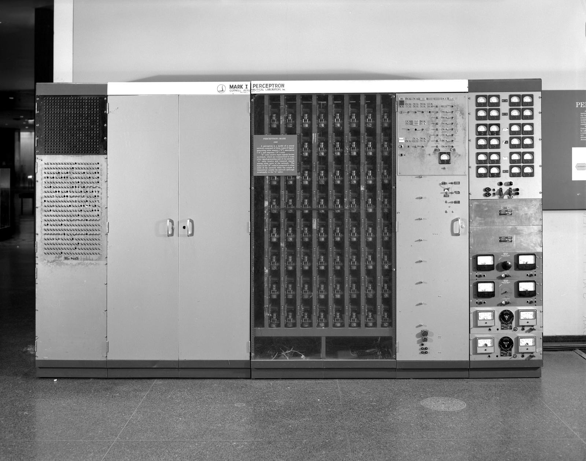
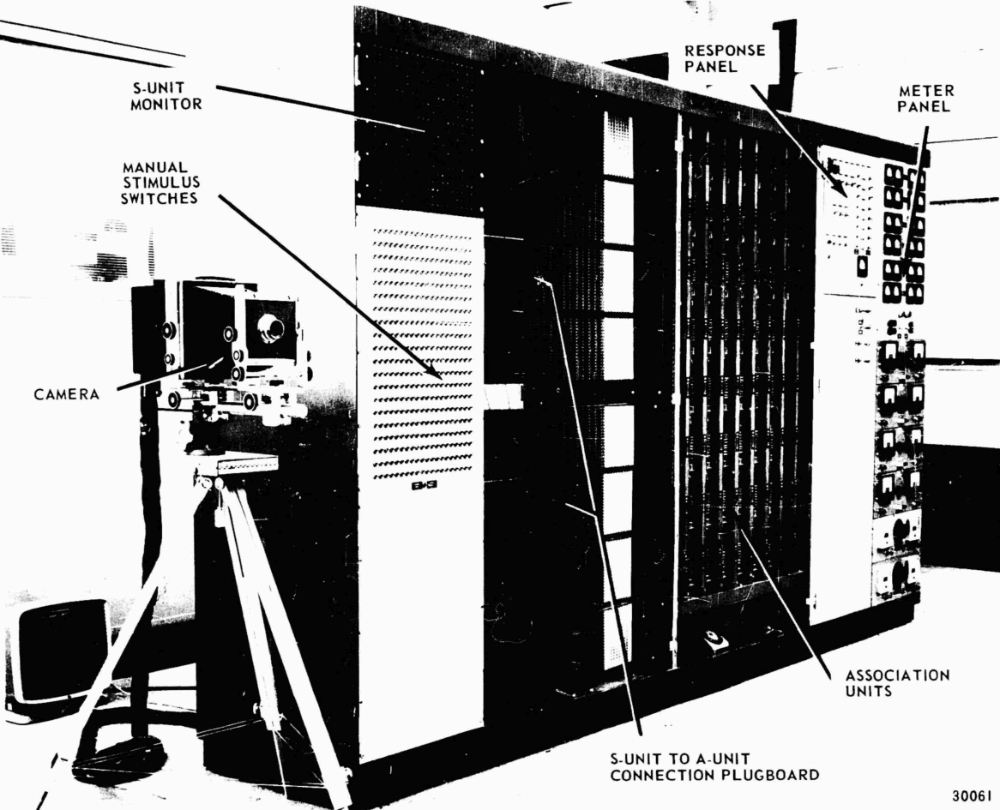

完整親子朗讀稿
片頭：第五十次以後
1958 年夏天，一群記者圍著一部比房間裡許多家具加起來還大的電腦。
它叫 IBM 704，重達好幾噸。
研究人員把一張張打孔卡送進機器。卡片上有記號，有些在左邊，有些在右邊。
電腦的任務很簡單：
判斷記號是在左邊，還是右邊。
一開始，它會答錯。
研究人員把正確答案告訴它。它再試一次。
又錯了。
再告訴它答案。再試一次。
大約五十次以後，奇怪的事發生了。
電腦開始能把左右分開。
現場的人興奮極了。報紙寫著，這是一部會「邊做邊學」的機器。
但先等一下。
究竟是誰教會它的？
研究人員並沒有事先寫下一條完整規則，告訴它：「看到這種洞，就選左邊；看到那種洞，就選右邊。」
可是，機器也不是自己突然醒來，發現了左右的意思。
它得到一批例子，也一次次得到「答對」或「答錯」的回饋。每次犯錯，它就把內部的一些數字稍微改一點。
發明這套方法的人，是一位三十歲的心理學家。
他的名字叫法蘭克・羅森布拉特。

他替這部會從錯誤中改變的機器，取了一個名字：
感知器。
第一章：心理學家走進電腦室
上一集裡，圖靈提出一個大膽的想法：
與其直接製造一部什麼都懂的「大人機器」，不如先做一部比較像孩子的機器，再教育它。
可是，要怎麼教育？
人類的孩子不會只靠一本規則書長大。
他伸手去拿杯子，抓歪了，下次就調整力氣。
她第一次把狗叫成貓，大人告訴她：「這是狗。」看過更多次以後，她慢慢抓到差別。
羅森布拉特想研究的，就是這件事。
他 1928 年出生於美國紐約州的新羅謝爾，念的是心理學。他關心的不是「怎麼讓電腦算得更快」，而是更奇怪、也更大的問題：
一個大腦最少需要哪些構造，才可能學會辨認東西？
那時候，多數電腦程式都像一疊寫得非常仔細的命令。
第一步做什麼，第二步做什麼；遇到甲，就走這條路；遇到乙，就走另一條路。
程式設計師沒有想到的情況，機器通常也不知道怎麼辦。
羅森布拉特卻想試另一條路。
不要先把所有答案塞進機器。
先給它一些很小的判斷零件，讓這些零件一起投票；答錯時，再改變每一票有多重要。
第二章：一群會改變音量的投票員
想像教室裡坐著三位投票員。他們要判斷一張卡片上的記號在左邊還是右邊。
第一位只注意卡片左上角有沒有黑點。
第二位只注意中央。
第三位只注意右下角。
三個人都會投票。可是，每一票的音量不一樣。
有人的聲音像蚊子：「左邊……」
有人的聲音像拿著大聲公：「右邊！」
機器把所有聲音加起來。右邊比較大聲，就回答右邊；左邊比較大聲，就回答左邊。
如果答對了，先保留現在的做法。
如果答錯了，就調整音量：讓幫助它答對的線索，下次大聲一點；把推它走向錯答案的線索，稍微轉小聲。
再看一張卡片。
再投一次票。
再調一次音量。
這些「每一票有多重要」的數字，後來常被叫作權重。
輸入一個例子，做出判斷，和正確答案比較，再調整權重——這就是感知器學習時最重要的動作。
請注意，它學到的不是一條可以念出來的句子。
機器裡沒有突然出現：「原來左邊就是這樣！」
它改變的是許多連結的強弱。經過一次又一次練習，某些線索的聲音變大，另一些變小，最後比較常答對。
在機器學習的意思裡，這的確可以叫作「學習」：程式沒有被重新寫一遍，表現卻因為例子和回饋而改變了。
但它和人類的學習仍然不一樣。
它不知道自己正在上課，也不會因為答對而驕傲。它只是按照數學方法，調整數字。
第三章：替機器裝上一隻眼睛
1958 年展示的感知器，還是在 IBM 704 裡運作的程式。
羅森布拉特想做得更進一步。
在美國海軍研究經費的支持下，他和團隊開始打造一部真正的感知器機器。
它後來被稱為 Mark I Perceptron，也就是「第一型感知器」。

機器前方有一塊二十乘二十的感光板。
四百個小小的感光元件排在一起，就像一隻非常粗糙、只有四百格的眼睛。光照在哪幾格，哪些格子就送出訊號。

感光板後面，是一大堆線路、插頭和可以調整的連結。
今天，我們把照片放進電腦，畫面會變成許多數字。Mark I 做的事情比較原始：它真的用感光元件接收簡單圖案，再讓內部的連結一起投票。
研究團隊用它進行辨認簡單圖形的實驗。
這不是一個人關在房間裡完成的魔法。
羅森布拉特提出理論，海軍提供經費；工程人員把想法做成硬體，學生和程式設計人員準備實驗、記錄結果、處理問題。
當機器的答案愈來愈準，他們看到了一種和傳統程式不同的可能：
人類不必把每一個判斷步驟都寫出來。
可以給機器例子，讓它自己調整內部的權重。
這個想法，今天聽來很熟悉。
可是當時，它新得像一道閃電。
第四章：報紙把閃電寫成了太陽
羅森布拉特對感知器非常有信心。
他認為，這條路有一天可能讓機器辨認物體、理解語言，甚至處理更複雜的工作。
記者聽見這些預測，寫出了更驚人的標題。
有些報導把感知器說成「人類大腦的第一個真正對手」，彷彿會看、會說、會自己產生想法的機器就快出現了。
但展示桌上的機器，實際上只是在做非常窄的分類。
它需要研究人員挑選題目、準備例子、告訴它正確答案。換一種差很多的圖案，或把問題變複雜，它不一定還會成功。
這裡有兩件事可以同時成立：
感知器真的帶來了重要的新方法。
人們也真的把它能做到的事，說得太快、太大了。
當一項新科技剛出現時，這兩件事常常一起發生。
真實的突破很亮。過度的想像又在外面加上一圈更亮的光，讓人看不清它真正的大小。
第五章：一條線分不開的問題
感知器很會學某些分類，卻不是什麼都能學。
想像地板的四個角各放一張卡片。
左上角和右下角放星星。
右上角和左下角放圓圈。
現在，請你用一條拉直的繩子，把所有星星放在一邊，所有圓圈放在另一邊。
你會發現，怎麼拉都不行。
因為兩種圖案交錯站在對角。
最簡單的感知器很像只會拉一條直線的分類員。遇到能用一條線分開的問題，它可以慢慢找到那條線；遇到必須轉彎、分好幾次才處理得了的問題，它就被自己的構造卡住。
1969 年，馬文・明斯基和西摩・派普特出版《Perceptrons》一書，用數學仔細分析這類簡單感知器能做什麼、不能做什麼。
批評並不是在說「機器永遠不可能學習」。
它指出的是：這一代方法有清楚的邊界，而當時的人還沒有方便的方法、足夠的運算能力和資料，把許多層連結有效地一起訓練。
雖然 Mark I 看起來有好幾排元件，它能學著調整的關係，和今天一層又一層的深度神經網路相比，仍然非常簡單。
外界的期待降溫了。研究經費也轉向別處。
不過，不能把後來所有人工智慧的低潮，都怪在一本書身上。
承諾太大、機器太慢、資料太少、方法還不成熟——許多原因一起把熱潮推進寒冬。
第六章：那個小動作沒有消失
1971 年，羅森布拉特在四十三歲生日那天，因為帆船意外溺水過世。
他沒有看到幾十年後，神經網路重新成為人工智慧最重要的方法之一。
後來的研究者找到訓練多層網路的方法。電腦變快，資料變多，晶片也能同時處理大量計算。
今天的深度神經網路和 Mark I 相差非常遠。
它們有更多層、更多資料，也可能有數百萬、數十億，甚至更多可以調整的權重。現代系統的成果，不是羅森布拉特一個人完成的，而是許多世代的研究者、工程師、資料工作者和晶片製造者共同累積的結果。
可是，在巨大的差異裡，有一個小動作留了下來：
先做出預測。
看看錯了多少。
調整內部的權重。
再試一次。
所以，回到本集的大問題。
如果機器能因為答錯而改變自己，這算不算學習？
在機器學習的定義裡，算。
因為它的表現，確實透過例子和回饋改善了。
但這不代表它像人一樣理解，也不代表它自己決定了要學什麼。
誰準備例子？
誰提供正確答案？
誰決定答對的標準？
這些看不見的選擇，也一起進入了機器學到的結果。
圖靈想像了一部可以被教育的兒童機器。
羅森布拉特讓人們第一次清楚看見：一部機器真的可以在犯錯以後，改變下一次的做法。
可是幾年後，另一部機器走上完全不同的路。
它不調整權重，也沒有真的學會理解一句話。
它只是抓住你說的幾個字，再把它們巧妙地送回來。
結果，坐在螢幕前的人卻開始對它說出心裡的秘密。
下一集，我們要認識第一批聊天機器人中最有名的一位：
ELIZA。
親子／課堂延伸
聽完先不要考名詞
請孩子選一題討論：
- 機器從錯誤中改善表現，和人類「懂了」一件事，有什麼相同與不同？
- 如果訓練例子本身有偏差，機器調整得再認真，可能學到什麼？
- 當新聞說一項科技「很快就會什麼都能做」，我們可以追問哪些問題？
三個核心概念
- 權重： 每一條線索在機器判斷時有多重要，就像音量不同的投票。
- 從錯誤中學習： 做出預測、比較正確答案、調整權重，再試一次。
- 方法的邊界： 簡單感知器只能處理某些能用一道直線分開的分類問題；表現改善不等於理解一切。
一分鐘活動：把哪一票轉大聲？
先假裝你要做一部「判斷是不是鳥」的小機器。替三條線索各給一個音量：
- 有羽毛
- 有翅膀
- 會飛
接著測試麻雀、企鵝和蝙蝠。
如果機器把企鵝判成「不是鳥」，你想把哪一條線索調大聲？如果它把蝙蝠判成鳥，又要把哪一條調小聲？
活動重點不是找出完美分數，而是體會：例子會改變權重；選了哪些線索，也限制了機器能學到什麼。
製作備註
- 1958 年公開展示使用 IBM 704 執行感知器程式；Mark I Perceptron 是後續打造的專用硬體，兩者不可寫成同一部機器。
- 「五十次」來自 Cornell 對當年展示的整理，指左右位置分類的約五十次試驗，不代表感知器看任何東西五十次都能學會。
- 文中的「三位投票員」是教學比喻，不是 Mark I 的實際零件數量。
- Mark I 的感光輸入板為二十乘二十、共四百個感光元件；正文只保留孩子理解所需的結構。
- 感知器的「學習」指依例子和誤差調整權重，不應寫成產生自我意識或像孩子一樣理解。
- 《Perceptrons》分析的是一類簡單感知器的數學限制；不把整個 AI 寒冬歸因於單一本書。
- 現代深度神經網路不是把 Mark I 直接放大。兩者共享以可調權重從資料改善表現的核心想法，但架構、訓練方法、資料量與硬體已大不相同。
主要資料來源
- Cornell Chronicle. Professor’s perceptron paved the way for AI – 60 years too soon. 2019.
https://news.cornell.edu/stories/2019/09/professors-perceptron-paved-way-ai-60-years-too-soon
- Rosenblatt F. The Perceptron: A Probabilistic Model for Information Storage and Organization in the Brain. Psychological Review. 1958;65(6):386–408.
https://doi.org/10.1037/h0042519
- Rosenblatt F. Principles of Neurodynamics: Perceptrons and the Theory of Brain Mechanisms. Cornell Aeronautical Laboratory; 1961/1962.
https://apps.dtic.mil/sti/citations/AD0256582
- Minsky M, Papert S. Perceptrons: An Introduction to Computational Geometry. MIT Press; 1969.